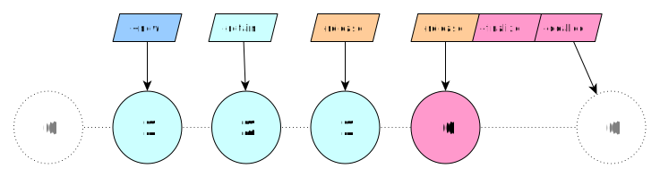

NSObject: -retain / -release
Let’s dive into the fascinating world of memory management in mulle-objc, a system that sets itself apart with its unique approach to object lifecycle management. As you’ll soon discover, mulle-objc employs a highly efficient Manual Memory Management (MMR) system, eschewing Automatic Reference Counting ( ARC) in favor of a more predictable and controllable approach.
Have you ever wondered how objects in a programming language know when they’re no longer needed? In mulle-objc, this is handled through a sophisticated retain counting mechanism. Unlike some contemporary systems that abstract away memory management, mulle-objc gives you, the developer, direct control over an object’s lifecycle.
At the heart of mulle-objc’s memory management are six core operations. It is important to know these operations, but in a well designed system, you will rarely use them directly. And there are only two methods you will encounter overriding with your own implementations:
| Operation | Override | Description |
|---|---|---|
+alloc / +new |
NO | Creates an object with an initial reference count of 1 |
-retain |
NO | Increments the reference count |
-release |
NO | Decrements the reference count |
-retainCount |
NO | Returns the current reference count |
-finalize |
YES | Called from -release when the reference count reaches zero. Can also be triggered by -mullePerformFinalize. Allows the object to free resources and untie itself from other objects. Runs only once in an object’s lifetime. |
-dealloc |
YES | Performs final cleanup when the reference count reaches zero |
Anyway, let’s break this down with an example:
Document *document;
document = [Document new]; // count = 1
[document retain]; // count = 2
[document release]; // count = 1
[document release]; // count = 0, triggers finalize and then dealloc
// DO NOT MESSAGE document AGAIN
In this sequence, we create a Document object, increase its retain count, then
decrease it twice.
When -retainCount reaches zero, the -release method automatically
calls -finalize and then -dealloc in sequence, ultimately leading to the
objects destruction.

LAW: Once the number of
-releasecalls to an object exceeds the number of-retaincalls, the object becomes deallocated and invalid.
When to call -retain and -release
When you create another object or receive one as a method or function argument,
you may want to keep it around with your object. Effectively you
are keeping a reference to it. Now when you do that, you increase the
reference count of that object with -retain. Conversely, when you are done
with it, you use -release to relinquish ownership.
@class Person;
@interface Document : NSObject
{
Person *_author;
}
@end
@implementation Document
- (void) setAuthor:(Person *) person
{
// THIS CODE IS JUST FOR ILLUSTRATION PURPOSES
// DO NOT WRITE ACCESSORS THAT CALL -release INSTEAD OF -autorelease
if( _author != person)
{
[_author release]; // remove old author
_author = [person retain]; // keep new author
}
}
In general though in mulle-objc you use a @property to keep an object reference, which simplifies the proceedings.
Caveats
But what about the challenges of this system? While it offers great control, it
does require careful management from the developer. You must ensure that every
-retain is balanced by a -release, that -dealloc releases all retained
objects, and that you never access released objects.
These requirements can potentially lead to memory leaks or crashes, if not handled correctly. The next chapter discusses how mulle-objc mitigates many of these challenges through its autorelease pools.